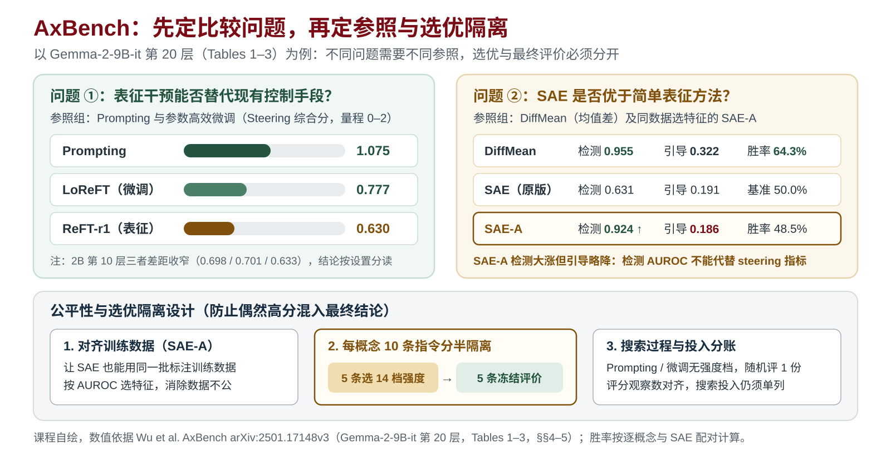

本讲章节导航
第 9 课｜MI 实验 baseline、双基线与可复现性¶
导读与学习目标¶
一次比较的第一步，是说清分数差异要回答什么问题。AxBench 用两组参照比较模型控制方法。一项 Codex 分析任务则用原有提示作参照，判断改版是否推进了分析。读完两例，你应能为自己的研究选择参照、说明比较单位与指标、分开选优和最终评价，并留下可查的成本与执行记录。
案例一：AxBench 怎样选择 baseline¶
关键输入与数据。 Wu 等人用 Concept500 比较 Gemma-2-2B-it 与 Gemma-2-9B-it 上的方法。概念检测给带标签的文本打分，检验正例能否排在负例前。Steering 给模型一条指令和目标概念，检验生成能否体现该概念。LLM 评审对概念体现、指令遵循和流畅度各打 0、1 或 2 分，三项取调和平均，综合分的量程是 0–2；任意一项为 0 则综合分为 0（例如完全不体现概念但流利答题的 0/2/2，算术平均为 1.33，调和平均为 0；此为口径示意）。每个概念用 10 条指令，表征 steering 方法有 14 档候选强度。见 AxBench v3 §§3.3、4.1。
每格依次为 2B 第 10 层设置 / 9B 第 20 层设置，对应每个模型所测的较早层。表中包含三类对象：① 工程控制手段：Prompting（指令前加提示）与微调（LoReFT、LoRA、SFT），它们的结果列在对应的比较设置下，均省去生成时的强度选档；② 简单或有监督表征方法：DiffMean（正负样本激活均值差）与 ReFT-r1（联合训练概念检测与干预的秩 1 表征微调）；③ 无监督字典方法：SAE（预训练稀疏自编码器）及 SAE-A（为对齐训练数据条件，用同一批标注训练数据按 AUROC 为 SAE 选出最匹配特征）。见 AxBench v3 §§4、5，Tables 1–3。
| 方法 | 检测 AUROC（表 1） | Steering 综合分（表 2） | 对 SAE 胜率（表 3） |
|---|---|---|---|
| Prompting | 0.910 / 0.940 | 0.698 / 1.075 | 90.0% / 97.6% |
| LoReFT（参数高效微调） | — | 0.701 / 0.777 | 88.9% / 88.6% |
| LoRA（参数高效微调） | — | 0.637 / 0.602 | 85.0% / 79.9% |
| SFT（完整微调） | — | 0.637 / — | 90.0% / — |
| ReFT-r1 | 0.952 / 0.966 | 0.633 / 0.630 | 85.2% / 83.6% |
| DiffMean（均值差） | 0.948 / 0.955 | 0.297 / 0.322 | 63.2% / 64.3% |
| SAE（稀疏自编码器） | 0.735 / 0.631 | 0.177 / 0.191 | 50.0% / 50.0% |
| SAE-A | 0.924 / 0.924 | 0.166 / 0.186 | 49.3% / 48.5% |
表 3 对每个概念将该方法与同设置 SAE 的 Steering 综合分逐一配对，平局记半胜，报告胜出概念占比。SFT 只覆盖前 20 个概念，论文只列出 2B 的结果。破折号表示对应表中没有结果。Table 3 与相邻正文的部分平均胜率有出入，本讲义采用表中按模型与层设置列出的数值。
先判断。 ① 如果你要决定是否用表征干预替代已有的模型控制手段，会选哪组参照？② 如果你要判断 SAE 是否优于简单表征方法，又会选哪组？选定参照后想一想，SAE-A 的检测分明显高于 SAE，这足以预测它更擅长 steering 吗？如果强度可调，哪批指令可以用来选强度？
展开 AxBench 案例分析
两组参照。 对第一问，prompting 和微调是实际可用的替代办法。在 9B 第 20 层设置，prompting 的 steering 分是 1.075，LoReFT 是 0.777，ReFT-r1 是 0.630。在 2B 第 10 层设置，三者分别为 0.698、0.701 和 0.633，差距小得多。对第二问，可以用 DiffMean 这类简单表征方法作为参照。以 9B 第 20 层设置为例，DiffMean 与 SAE 逐概念配对，胜率 64.3%，同时在概念检测上分别得到 0.955 和 0.631。
比较单位和指标。 Table 1 先按概念算 AUROC，再对概念取平均。Table 2 报告选定强度后的平均综合分：表前 0/2/2 对应干预过弱，另一端如把强度拉大导致偏题的 2/0/1（算术平均 1.00，调和平均仍为 0）对应干预过强；调和平均同时封住两端，因此表征方法必须从 14 档中选强度，并把选优与评价隔开。Table 3 的逐概念胜率与 Table 2 的均分幅度互补——例如 9B 第 20 层上 DiffMean 均分只比 SAE 高 0.131，逐概念胜率却达 64.3%（平局记半胜），说明优势并非靠少数极端概念拉高。读胜率时要看它数的是概念，读 AUROC 时要看它排的是文本。SAE-A 在表中两种设置下都提高了检测 AUROC，steering 综合分却略低于原 SAE，说明两项任务需要各自的指标。
公平性与选择。 有监督方法有训练数据可用，作者增设 SAE-A，让 SAE 也能依据同一批带标签的训练数据选特征。作者用 5 条指令选强度，用另外 5 条评价选中的强度。若用同一批指令既挑最高分又报最终效果，偶然的高分会参与选优。Prompting 和微调对每条测试指令随机抽一份输出来评分，使各方法计分的输出份数相同。比较时还要交代各边实际搜索了什么、投入了多少。见 AxBench v3 §§4、4.1、5.2。

方法与边界。 先用一句话写清比较要决定替代、改进还是组件贡献，再决定用什么参照、按什么单位计分、用哪些材料选优和评价。本表适用于指定 Gemma 模型、层和合成概念，steering 由 LLM 评分，SFT 的概念覆盖也较窄。作者指出自动标签偏词元级，标签质量可能解释 SAE 的部分弱势，推广到其他模型、高阶概念或人工评价需要新的比较。见 AxBench v3 §§4.1、6。
案例二：Codex 算出的恢复比例怎样改变判断？¶
对同一批 GPT-2 IOI 干预记录，原有分析提示和改版提示给出的判断，哪一个更站得住？关键是有没有算出干预找回了多少比例的分数，以及这个比例会怎样改变对两组模板差异的解读。
IOI（间接宾语识别）看模型预测句末人名时有多偏向原句的间接宾语，分数是它与原句主语的 logit 差。模板族是一组共用句式的输入，本例有两族，每族 6 条。每条输入有三个分数，分别来自原句、替换一个人名后的扰动句，以及在扰动句上恢复一处原句内部激活后的结果。
原提示、改版 A、改版 B 和组合版各用 Codex 重分析一次，都拿到相同的 12 条既有记录。下表列出两族在三个条件下的均值：按“干预后减扰动后”的原尺度增幅算，store 族均值为 1.3150，park 族均值为 1.0856，store 族高出 0.2295（按未舍入原值计算；12 条输入在干预后的 logit 差仍全为负值）。这能说明 store 族恢复得更多吗？
| 模板族（各 6 条） | 原句均值 | 扰动后均值 | 干预后均值 |
|---|---|---|---|
| store | 3.5564 | −3.6313 | −2.3163 |
| park | 3.2756 | −3.1594 | −2.0738 |
下表把四个版本的单次执行成本、采用状态与整轮研究总账并列给出。
| 记录范围 | 耗时 | 已知输入与输出 token | 采用状态 |
|---|---|---|---|
| 基线提示单次分析 | 106.71 秒 | 13,412 | 参照基线 |
| 改版提示 A 单次分析 | 121.28 秒 | 12,312 | 未入选 |
| 改版提示 B 单次分析 | 159.44 秒 | 17,548 | 匿名比较采用 |
| 组合版单次分析 | 235.13 秒 | 16,920 | 未入选 |
| 整轮研究总账 | — | ≥ 294,128（另有 3 次调用未知，不按 0 计） | — |
先判断。 ① 一份笔记建议算恢复比例，另一份实际算了出来。你会用上表哪两个差值估算这个比例？什么结果会让你收窄对组间差异的解释？② 结合四版成本表，只报告选中版本的单次分析成本会漏掉哪些开销？选优依据是单次最省吗？③ 原计划下一轮在同一批记录上把基线和三个候选各跑一次，但整轮只剩两个分析运行名额（每个名额允许试跑一个版本）。现在能完成这组四次运行的对照吗？
展开 Codex 案例分析
恢复比例改变了什么。 原提示报告了每条输入的增幅与分组均值，把恢复比例留作下一步。用上表族均值直接作比值 （干预后均值 − 扰动后均值）÷（原句均值 − 扰动后均值），按未舍入原值计算 store 族为 18.30%、park 族为 16.87%（相差 1.43 个百分点）；改版 B 按每条输入先算比例再族内取平均，store 族为 17.90%、park 族为 16.83%（相差 1.07 个百分点），两组逐条比例的范围也有重叠。两种汇总权重不同，报告时不能混用（与案例一“先按概念算再平均”同理）。差距显著收窄的原因在于：store 族原尺度增幅虽比 park 族高约 21%，但它受扰动损失的总分跨度（7.1877 对 6.4350）也高约 12%，按各自损失归一化后两族接近。此外，原句分数只是同一指标的数值参照，不代表最大可恢复上限；12 条输入干预后偏好仍全为负，判断应限定在这两个已观察的模板族。
选优、成本与停止。 四份分析笔记匿名比较后采用了改版 B，随后逐项复算该笔记中的 99 个数值，均在舍入容差内。对照四版成本可见：改版 A 比原提示更省 token 却未入选，组合版最慢也未入选；改版 B 补做了可复算的分析，但也比原提示多用约 53 秒和 4,136 token（属于分析推进，并非成本优势）。整轮研究的实际开销远不止选中版本的那一次分析，还包括拟定候选、试跑、选优与失败尝试，已记录的 294,128 token 只是用量下界（另有 3 次调用未知，不能按 0 计）。剩余额度只够两次分析运行名额，凑不齐下一组所需的四次，因此停止。
把两层账拆开看。 科学层的参照是扰动句，比较对象是 store 与 park 两族，结论是归一化恢复比例接近；工作方式层的参照是同任务实跑的原有提示，比较对象是四版分析流程，结论是改版 B 在本次开发记录里推进了分析、但单次更贵且尚未在独立新任务上验证。
方法与边界。 比较 AI 工作方式时，先让原有方式在同一任务上真实跑一次，再报告试了几个版本、怎样选优、总成本多少，以及结论适用于什么范围。这一轮中途修过校验器，应按一次开发过程来读。要检验改版能否在其他任务上同样推进分析，需要固定比较流程，在新材料上评价，并给原有方式相称的尝试机会。
数据来自 2026 年 10 月 22 日的 GPT-2 IOI 重分析、匿名选优和独立复算记录。
把两种比较带回本人项目¶
- 找出研究 baseline。 带上第 8 课后实际运行的一条研究输入及结果。尚未运行时，先优先补一次最小研究运行或等价核验（保留输入、条件、结果与缩减理由），将下方第 2 步移至课后整理时段补跑，并在提交中注明实际状态。
- 实跑原有 AI 工作方式。 已完成研究 baseline 者，按本课任务，在课程使用的 Agent 平台 Pi Agent 上针对本人项目一小段已获准任务运行一次原有 AI 方式，并注明实际完成状态。
- 分开记录两条基线。 按下表把科学研究 baseline 与原有 AI 工作方式基线分开列账，附上版本、配置、原始输出与日志位置。涉及随机过程时记录种子，涉及动态检索时保存实际请求和响应。
| 基线类型 | 比较问题 | 输入与版本 | 评价单位与指标 | 资源与成本 | 选优与最终评价边界 |
|---|---|---|---|---|---|
| 科学研究 baseline | 我的方法／解释在研究对象上是否成立？ | 任务输入、材料版本、配置与种子（或等价条件） | 比较单位、指标定义与分母 | 算力、运行次数或人工核验耗时 | 哪些材料用于调试／选参，哪些用于最终评价 |
| 原有 AI 工作方式基线 | 后续改版流程是否提升质量、减少遗漏或省成本？ | 同一任务片段、提示／上下文、模型与工具版本 | 输出核验判据（准确性、遗漏、复算等） | 单次耗时／token 与整轮尝试、失败总账 | 冻结改版后再在未参与选优的材料上同判据比较 |
方向适配：ML／算法项目可采用数据划分与模型对照；系统／软件项目采用固定负载、边界输入与故障条件；理论或文献项目采用现有推导、反例、覆盖审计或独立复核，不要求统一安装代码环境或 GPU。
- 确定下一步。 把实际缺口和下一项检查写回项目。已有记录足以支持当前判断时，指出可复查的依据。若要判断结果是否稳定，安排足以支持该判断的重复或新条件核验。最后用判断门提交清单自查。
课外预算与下次输入¶
本课为研究门课，课外总投入最多 60 分钟：整理 15 分钟，修订并提交判断门 45 分钟；研究 baseline 自第 8 课后开始运行，原有 AI 工作方式在课上运行；不叠加新必读。
安装、下载与排障计入总预算。设备或网络故障时，用已保存的材料和日志完成可做的检查；未执行部分标明待补，不能以回放替代实际运行。本课按既定研究门提交累计项目，课堂发现的缺口在原预算内修订。
课后参考¶
七字段规格表¶
| 字段 | 要解决的歧义 |
|---|---|
| 假设对应 | 这次执行究竟检验哪项命题 |
| 变量 | 主动改变、观察、固定和未控制的因素是什么；材料怎样选择 |
| 步骤 | 另一执行者怎样完成同一操作；哪些步骤拟用 Agent，哪些必须人工核对 |
| 度量标准 | 指标、比较单位、分母、判定与不确定性怎样记录 |
| 对照 | baseline、消融或等价比较为什么能回答问题 |
| 随机化与重复 | 配对、分配、随机性与重复怎样服务于主张；不适用时用何种等价复现条件 |
| 停止条件 | 预算、完成与提前停止规则，避免按有利结果延长搜索 |
字段与项目模板保持一致。材料选择记入变量、步骤与对照；最大风险和失败预案写在相关字段或表后。配对用于控制材料差异，重复用于观察波动，二者不能互相替代。 每个字段都应回到研究问题。无代码项目可以记录材料版本、资料选择和判定步骤；不需要为了模板增加种子、GPU或代码目录。不适用的字段写明理由，但保留使判断可追查的等价信息。
模板迁移¶
1. 为什么要迁移¶
第 1-8 课使用 starter-template.md，建立问题定义、AI 使用记录、Agent 权限矩阵、伦理检查和轻量工件追踪。第 9 课 baseline 与实验规格基本明确后，判断门条件之九要求"在现有项目内补足完整模板字段，且没有丢失 AI 使用记录和伦理说明"。
迁移不是重写，也不是课堂里的第二个新方法任务。按下表把 starter-template 中已有的内容、状态和历史记录搬到 project-template.md 的对应位置，并补全 baseline、实验规格、研究判断记录、复现说明和实验记录字段。
2. 迁移对照表¶
| starter-template 字段 | project-template 对应位置 | 迁移注意 |
|---|---|---|
| §1 项目概览 | §1 项目信息 | 补充代码仓库 URL |
| §2 八阶段链路草图 | §12 复盘（八阶段链路反思） | 早期链路草图作为期末复盘输入 |
| §3 问题定义初版 | §2 问题定义与研究问题 | 不重写，只搬迁；保留非例和可证伪命题 |
| §4 轻量工件追踪表 | 工件状态追踪表 | 状态升级：判断门相关工件至 review 或 approved |
| §5 AI 辅助精读卡 | §3 相关工作与证据地图（精读卡归档到 notes/） |
精读卡不入正文，但证据地图引用 |
| §6 AI 使用记录 | AI 使用记录章节或 ai-usage-log.md |
不丢失任何条目，包括第 7-8 课的假设生成与方案分享记录 |
| §7 轻量失败记录 | §4.7 已遇失败与放弃项 + failure-log.md |
事实记录不丢失；判断门条件之八直接检查 |
| §8 Agent 权限矩阵 | §6 个人 Agent Workflow（权限边界字段） | 第 10 课会扩写，本课只搬迁当前边界 |
| §9 早期伦理与合规检查 | 伦理章节或 ethics-and-compliance.md |
不丢失，补一条"数据使用限制"说明 |
第 7 课已维护的假设与设计内容继续复用；机制假设、研究判断、质询或新条件的个人处理和实验规格可迁入分文件组织，也可作为同一主文档章节。README 写明映射，原始记录与阶段版本保留。
3. 新增字段¶
迁移时需要在 project-template 中新增以下字段（来自本课产出）：
- §4.2 Baseline：列出研究 baseline，标明类型（朴素/强/消融）与公平性说明；另记录本人原有 AI 工作方式的实际运行基线，分别回答科学对照与工作方式对照的问题；
- §4.4 指标：每个指标写明含义、操作定义和适用理由；
- §4.5 消融和对照：说明为区分解释选择的对照、消融或等价检查，以及失败预案；
- §4.6 实验规格：补全七字段中的适用内容；不适用项说明理由，并保留等价的可追查信息；
- §5 研究判断记录：至少 2 条，每条六字段（判断内容、取舍理由、适用边界、依据、待验证状态、影响工件）；
- §7 实验记录：至少 1 行可追溯实验，包含实验 ID、配置、结果、对应假设、是否失败；
failure-log.md：至少记录一个已经遇到的执行失败或已经放弃的备选方案，写明发生条件、处理方式和回写位置；前瞻性失败预案不能替代这条事实记录；- 方案质询处理记录：记录实际收到的质询或本人新条件自检、证据依据、采纳／澄清／补证／暂缓／保留决定与理由；未收到质询时不虚构反馈，使用课程提供的问题进行自检。
4. 迁移验收¶
迁移完成的判据：
- starter-template 中已有内容及其
draft、review、approved或stable状态都有对应位置，历史记录与未决项不丢失； - AI 使用记录条目数 ≥ 第 1-8 课总和（不丢失）；
- 伦理说明含数据使用限制一条；
- 工件状态追踪表更新到当前版本，判断门相关工件状态为
review或approved； - 实验记录至少 1 行可追溯。
判断门提交清单¶
用本人现有工件核对：命题是否对应实际观察，参照是否公平，过程是否可复查，下一步是否受当前证据约束。按需练习见案例输入。
判断门是全课第二次正式提交。
1. 提交方式¶
提交一个指向当前个人项目版本的链接、tag 或压缩包，不重复制作与项目仓库分离的汇报文档。第 1-9 课所有课堂练习和阅读记录都已回写同一项目，判断门检查的是当前版本是否满足条件，不是重新制作材料。
2. 门条件自查清单¶
以下 9 项与 assignments.md Checkpoint 2 门条件一一对应，请逐项自查：
| 序号 | 门条件 | 自查问题 | 对应项目文件 |
|---|---|---|---|
| 1 | 一个实际运行的研究 baseline 或最小验证原型，同时记录学生原有 AI 工作方式的基线；科学对照与工作方式对照分别建立 | 是否有至少 1 个 baseline 能由另一执行者按同样输入与条件重新检查？baseline 类型（朴素/强/消融）是否写明？为什么是公平对照？是否同时记录了本人原有 AI 工作方式的一次实际运行基线，科学对照与工作方式对照分别建立？ | src/、experiments/、README.md 运行说明、ai-usage-log.md |
| 2 | 数据、材料、评价指标和使用限制说明，包含证据角色、独立单位与反馈使用 | 数据来源、许可证、是否含敏感内容、是否上传外部 API 是否写明？评价指标的操作定义与计算口径是否明确？是否按项目说明标注协议、独立单位、证据角色与反馈用途？ | experiment-spec.md §数据、§度量标准 |
| 3 | 环境、配置、随机种子或等价复现条件 | 环境（OS、Python、关键库版本）是否记录？模型名、解码参数、prompt 模板、rubric 版本是否记录？所有已使用种子或等价复现条件是否记录？若主张涉及方差或稳定性，是否事先说明足以支撑该主张的重复计划？ | experiment-spec.md §环境与配置、experiments/*/config.yaml |
| 4 | 至少 2 条研究判断，每条写明取舍理由、适用边界、依据和待验证状态 | 是否有 ≥2 条研究判断？每条是否包含六字段（判断内容、取舍理由、适用边界、依据、待验证状态、影响工件）？ | hypothesis-and-judgment.md |
| 5 | 实验规格完整，包括命题 ID 对应、变量、步骤、度量标准、对照和停止条件；说明搜索次数、成本及改变判断的条件 | 命题 ID、适用字段及不适用理由是否明确？是否记录搜索次数、成本和改变判断的条件？停止条件是否预先写明，而非"跑到显著为止"？是否为当前最大风险写了一条可执行的失败预案？ | experiment-spec.md |
| 6 | 第 8 课方案质询或新条件问题的个人处理记录 | 是否记录实际收到的质询，或用教师问题／个人新条件完成自检？是否说明依据和当前处理？ | hypothesis-and-judgment.md 质询处理段或个人判断记录 |
| 7 | 当前最大风险和失败预案 | 最大风险是否具体（不是"时间不够"）？预案是否与该风险直接对应，能在触发时保留记录并进入可分析的回退路径？ | experiment-spec.md §失败预案、README.md §风险 |
| 8 | 至少记录一个已经遇到的执行失败或已经放弃的备选方案，写明发生条件、处理方式和回写位置；前瞻性的失败预案不能替代本条记录 | 记录是否描述已经发生的事实，而非未来预案？是否写清触发/发现条件、采取的处理和由此修改的规格、判断或工件？ | failure-log.md、相关实验日志与被回写工件 |
| 9 | 从轻量脚手架迁移到完整项目模板，且没有丢失 AI 使用记录和伦理说明 | 是否迁移到 project-template？AI 使用记录条目数是否 ≥ 第 1-8 课总和？伦理说明是否含数据使用限制一条？工件状态追踪表是否更新？ | 整个项目仓库 |
3. 判断门材料文件结构¶
以下是分文件示例；也可用 README 索引＋研究主文档＋实现与原始记录，按相同内容验收。
迁移到 project-template 后，判断门可采用以下分文件组织；无代码项目使用相应材料与检查记录，不要求增加空代码目录：
project/
├── README.md # 运行说明、项目概览、风险
├── problem-definition.md # 第 6 课产出（不重写）
├── proposal.md # 第 6 课第一性原理 + 第 7 课机制假设
├── evidence-map.md # 第 5 课产出，第 7 课补充
├── hypothesis-and-judgment.md # 机制假设列表 + ≥2 条研究判断 + 质询或新条件处理
├── experiment-spec.md # 七字段实验规格 + 复现说明
├── ai-usage-log.md # 第 1-9 课所有 AI 使用记录
├── ethics-and-compliance.md # 含数据使用限制
├── artifact-tracking.md # 工件状态追踪表
├── failure-log.md # 已遇执行失败或已放弃备选方案
├── src/ # baseline 与原型代码
├── experiments/ # 实验配置、日志、结果
└── notes/ # 精读卡、检索式、临时想法
4. 未通过时¶
未通过时，回到机制假设、证据整理或实验设计环节修改，一周内重新检查。第一次未通过不直接扣重分，但未按期修订会影响对应评分维度（见 assessment.md "实验设计与可复现性"维度，占 30%）。
门未通过时只要求修复缺失条件并重新检查，不重复提交无关材料。根因定位示例：
- baseline跑不通：先查实际错误与执行条件；环境、配置或输入问题回到本人项目，比较设计问题回到AxBench 案例；必要时缩小原型并说明影响；
- 实验规格缺停止条件：回到七字段规格表，补全运行次数与停止规则；
- 复现条件缺失：回到本人项目，补全环境和配置；涉及随机过程时记录种子，其他项目补全材料版本与判定步骤等适用条件；
- 研究判断 < 2 条：回到第7课“结果如何改变研究判断”，补写第二条；
- 质询处理缺少依据：回到第 8 课记录或本课自检，补上实际问题、证据和当前处理理由；
- 模板迁移丢失 AI 使用记录：回到模板迁移的迁移验收，按迁移对照表逐项核对。
常见错误¶
- 比较条件未论证：若模型是研究对象，不必保持同一模型；若要识别某个干预，却同时改变模型、数据和评价，须处理这些混杂，否则结论不能归因于该干预。
- 把单次差异写成稳定的方法效应。 根据主张强度预先说明重复次数或等价复现计划，并报告相称的不确定性。
- 无停止条件：跑到出现显著结果为止，构成隐性 p-hacking。应预先写明运行次数与停止规则。
- 度量无操作定义：只写"用遗漏率"，不写分子分母与缺失值处理。应补全计算口径。
- 复现条件记录不全：涉及随机过程却遗漏种子，或资料审计没有材料版本、判定步骤。应记录实际使用的条件，使另一执行者能够复查。
- 数据使用限制未写：未说明数据许可证与是否上传外部 API。应补全数据使用限制。
- 质询处理缺少依据：只写“已收到”或“已修改”，没有说明哪项证据改变了判断。应记录实际问题、依据和修订或保留理由；没有收到具体质询时用新条件自检，不虚构反馈。
- 迁移丢失 AI 使用记录：搬到 project-template 时漏掉了第 1-8 课的 AI 使用条目。应按迁移对照表逐项核对。
- 第二条研究判断不完整：只有一条研究判断，或第二条缺适用边界。应补全六字段。
- 把"代码能跑"当可复现：能跑不等于别人能复现。应对照 ACM 工件检查维度自查。
- 最大风险写成"时间不够"：不具体。应写具体风险（如样本量不足、kappa 可能过低）。
- 失败预案与最大风险脱节。 为当前最大的具体风险写一条预案，说明触发条件、回退动作和记录位置。遇到的风险可以是 baseline 跑不通、结果不支持假设或数据不可用。
- 用失败预案代替已经发生的失败记录：只写未来可能发生什么，却没有记录已经遇到的执行失败或已经放弃的备选方案。应补发生条件、实际处理方式和回写位置。
术语表¶
ACM 的 Functional、Reusable、Available 和结果复核是不同维度；复查工件时可分别看 documented、consistent、complete、exercisable。
| 术语 | 本课程中的含义 |
|---|---|
| baseline | 为特定比较问题选择的参照；先说明比较效果、机制、组件贡献还是成本，再控制相应混杂 |
| 朴素 baseline | 完成同一任务的简单参照，用于判断新增复杂度是否带来收益；不能单凭它确认机制必要性 |
| 强 baseline | 已公开、可比的现成方法，检验目标方法在公平条件下是否更好 |
| 消融 baseline | 在指定条件下去掉某模块，检查其局部贡献；结果仍受替代实现、交互与干预方式影响 |
| 公平性 | 相对于比较问题论证控制、资源与评价；研究对象允许不同，混杂需识别和处理 |
| 控制变量 | 为回答当前比较问题而选择保持一致或合理匹配的变量 |
| 混杂变量 | 可能影响结果但未被控制的变量 |
| 实验规格 | 回答验证哪个假设、怎么验证、什么是公平对照、什么结果支持或推翻、什么时候停的完整规格 |
| 七字段规格 | 假设对应、变量、步骤、度量标准、对照、随机化与重复、停止条件 |
| 停止条件 | 预先写明的运行次数与停止规则，防止"跑到显著为止"的隐性偏倚 |
| 失败预案 | 针对当前最大风险，预先写明触发条件、回退动作、记录位置及其对主张或范围的影响 |
| 已遇失败记录 | 对已经发生的执行失败或已经放弃的备选方案，记录发生条件、实际处理方式与回写位置；不能由前瞻预案替代 |
| 可复现性 | 另一执行者按相同输入、配置和协议取得可比结果；无代码项目保留等价核查条件 |
| 随机种子 | 决定数据划分、模型初始化、采样、解码等随机过程的种子值 |
| 方差报告 | 对关键比较多次运行并报告均值与标准差，避免把种子噪声写成方法效应 |
| 工件状态 | draft → review → approved → stable，追踪成熟度与门检查结果 |
| 判断门 | 第 9 课后的第二次正式提交，检查双基线、实验规格、复现说明、个人研究判断、质询或新条件处理、风险与失败记录、模板迁移 |
| ACM Badging | ACM 工件评审徽章体系；本课用 documented/consistent/complete/exercisable 等并列维度自查 |
| 质询处理 | 根据实际反馈或个人新条件判断修订、补证、暂缓或保留方案并写理由 |
延伸阅读与课程材料¶
课程内材料：
- 课程大纲
- 逐课阅读清单 第 9 课
- 早期研究脚手架（迁移源）
- 期末项目完整模板（迁移目标，判断门材料骨架）
- 项目里程碑与研究门（判断门权威条件 Checkpoint 2）
- 考核方案（"实验设计与可复现性"维度，30%）
- 可核验复现工件（合成输入与确定性等价复现教学示例）
正式书目（见 reading-list.md 第 9 课）：
- Wilson, G. et al. "Good Enough Practices in Scientific Computing." PLOS Computational Biology 13(6):e1005510 (2017). 按需参考项目组织、数据管理、版本记录、脚本和协作的基本做法。论文原文
- Pineau, J. et al. "Improving Reproducibility in Machine Learning Research." Journal of Machine Learning Research 22(164), 1–20 (2021). JMLR 正式页面。用途：将 ML reproducibility checklist 转化为 baseline、环境和实验报告要求。任选，约 25 分钟。
- ACM. Artifact Review and Badging, Version 1.1 (2020)。选读 documented、consistent、complete、exercisable、available 和 results validated 的定义。用途：区分"代码可下载""工件可运行"和"结果得到独立验证"。任选，约 15 分钟。
- Bouthillier, X. et al. "Accounting for Variance in Machine Learning Benchmarks." Proceedings of Machine Learning and Systems 3 (2021). MLSys 正式页面。用途：检查随机性、方差来源和不公平 benchmark 比较。任选，约 20 分钟。
课堂案例：
- Wu, Z. et al. "AxBench: Steering LLMs? Even Simple Baselines Outperform Sparse Autoencoders." arXiv:2501.17148v3 (2025)。选读摘要、§4（方法与 baseline）、§4.1、§5 Tables 1–3 和 §6。用途：看两组参照各自回答的问题、公平性设计与作者写明的边界（见案例一）。任选；本课为研究门课，不增加必读。